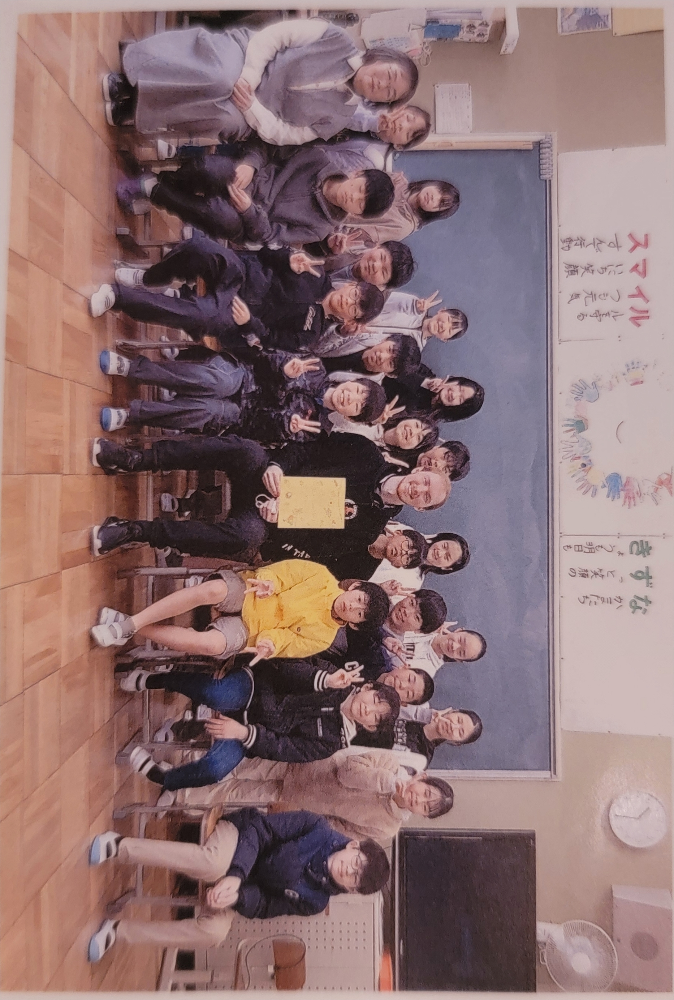
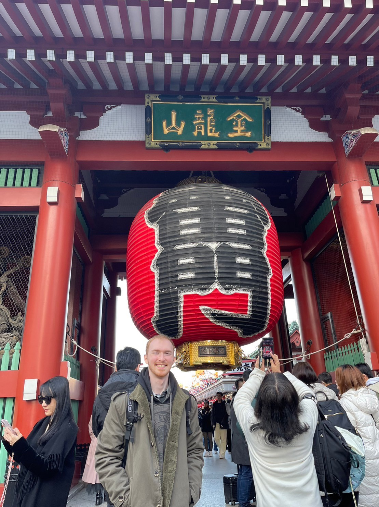

I graduated with a degree in Japanese studies from Adrian College here in Michigan. And while I was a student, I worked as a tutor for Japanese students studying English, and English speaking students studying Japanese. It was here that I discovered my love of teaching.
With my newfound passion, I applied for the JET program to teach English abroad in Japan. I lived and worked in Japan for about 2 years as an English teacher, teaching a variety of students. From 1st and second grade, all the way into 9th.
While I was teaching in Japan, I was also asked to do translations for my schools. I translated posters, emails, among other things so that the schools could communicate with parents and other schools outside of Japan that did not speak Japanese.
I also participated in a course for JET program participants with exceptional Japanese. In this program, we were taught how to professionally translate, and what sorts of things to expect working as a translator.
When I was a univsersity student, I studied abroad in Japan. I was a student at Kansai Gaidai University in Osaka, Japan. While I was there, I was propositioned to do professional modeling for the school. I modeled for photos used in brochures for the school. I modeled in videos for new classes the school was offering. And I modeled for promotional posters.
The posters I modeled for were placed in train stations all around Japan. However, the biggest posters are in Osaka and Kyobashi station.